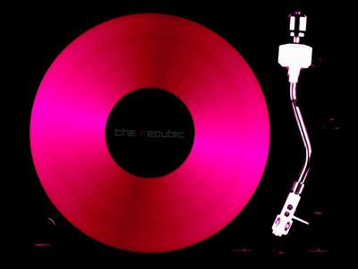

<div style=" height:400px ; position:relative; margin:auto; " [ngSwitch]="selected">
    
    
    

  </div>
  <audio controls>
    <source src="../../assets/maja.mp3" type="audio/mpeg">
  </audio>
  <div>
    <button class="dot" *ngFor="let t of musicType" (click)="setValue(t)"></button>
  </div>
